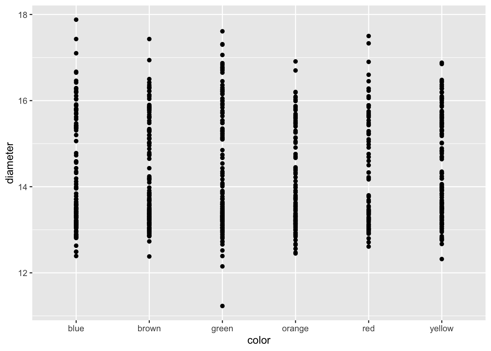

Reading files and basic introduction
Bill Perry
2018/03/14
Load Libraries
# load the libraries each time you restart R
library(tidyverse)
library(lubridate)
library(readxl)
library(scales)
library(skimr)
library(janitor)
library(patchwork)Read in the file
# Read in file using tidyverse code-----
south.df <- read_csv("data/South_Lake.csv", guess_max = 1000)##
## ── Column specification ────────────────────────────────────────────────────────
## cols(
## permanent_id = col_double(),
## lake_name = col_character(),
## date = col_date(format = ""),
## cladoceran = col_double(),
## copepod = col_double()
## )Read in excel files
Note that you can read in excel files in the same way.
# Note you can read in excel files just as easy
south_excel.df <- read_excel("data/south_lake.xlsx", sheet = "south_lake")Look at dataframe structure
One way is to click the blue trianlge in the environment tab in the upper right
You can also use code to inspect the structure of the dataset
# data Structure
str(south.df)## spec_tbl_df [29 × 5] (S3: spec_tbl_df/tbl_df/tbl/data.frame)
## $ permanent_id: num [1:29] 1.32e+08 1.32e+08 1.32e+08 1.32e+08 1.32e+08 ...
## $ lake_name : chr [1:29] "South" "South" "South" "South" ...
## $ date : Date[1:29], format: "1994-06-30" "1994-07-27" ...
## $ cladoceran : num [1:29] 3.89 6.11 5.44 1.26 4.1 ...
## $ copepod : num [1:29] 23.5 26.6 24.7 22.9 23.1 ...
## - attr(*, "spec")=
## .. cols(
## .. permanent_id = col_double(),
## .. lake_name = col_character(),
## .. date = col_date(format = ""),
## .. cladoceran = col_double(),
## .. copepod = col_double()
## .. )# or
glimpse(south.df)## Rows: 29
## Columns: 5
## $ permanent_id <dbl> 131846593, 131846593, 131846593, 131846593, 131846593, 13…
## $ lake_name <chr> "South", "South", "South", "South", "South", "South", "So…
## $ date <date> 1994-06-30, 1994-07-27, 1994-08-31, 1995-06-19, 1995-08-…
## $ cladoceran <dbl> 3.88800, 6.11278, 5.43744, 1.26099, 4.10000, 2.81810, 8.0…
## $ copepod <dbl> 23.45200, 26.55989, 24.71466, 22.88185, 23.05000, 64.1532…Saving files
Before we go too far it is often important to save the modified data
We can use the read_r package to do this with write_csv
# Saving files -----
# We can save the file we just read in using
# Saving dataframes -----
# lets say you have made a lot of changes and its now time to save the dataframe
write_csv(south.df, "finalized_data/output_file.csv")GGPlot
This script will go over a lot of the basics of creating graphs in GGPlot and later on we will go over how to do more specialized things. This is by no means a complete guide to GGPlot but will do most of the things that you will need to do in GGPlot. Any suggestions or recommendations of things to add would be welcome.
Graphing data
I feel that graphing is the key to all data analysis. If you can look at your data you can begin to see patterns that you may have predicted and want to test statistically. You will also be able to see outliers that exist that might affect resutls faster than looking at summary statistics.
Using proper GGPlot code you are supposed to have dat = , y = and x = ….
I have found that these are not necessary most of the time and we can talk about this later.
# GGplot uses layers to build a graph
ggplot(data=south.df, aes(x=date, y=cladoceran)) + # this sets up data
geom_line() # this adds a geometry to present the data from above
Because GGPlot builds things in layers you can add other geoms to the plot. Below you should try this code and see what happens when you put in + after geom_line() and then add gome_point().
# Add geom_point() -----
# Add points to the graph below using geom_point()
ggplot(south.df, aes(x=date, y=cladoceran)) +
geom_line() 
Adding axes labels
You can add in simple axes labels that are not formatted. Using the labs(x= " “, y =” ") statement. You can add in line breaks by putting in a \n in the statement that you have below.
# Adding axes labels ----
ggplot(south.df, aes(x=date, y=cladoceran)) +
geom_line() +
geom_point() +
labs(x = "Date", y = "Animals (Number per Liter)")Formatted axes labels
What I find really nice is being able to create formatted axes labels. You can do this a few ways but I have found the that the expression statement works the best for my needs. You can add in a ~ to add a space between symbols and a * will connect things without a space.
# Label expressions -----
# Adding special formatting to labels
ggplot(south.df, aes(x=date, y=cladoceran)) +
geom_line() +
geom_point() +
labs(x = "Date", y = expression(bold("Animals (No. L"^-1*")")))